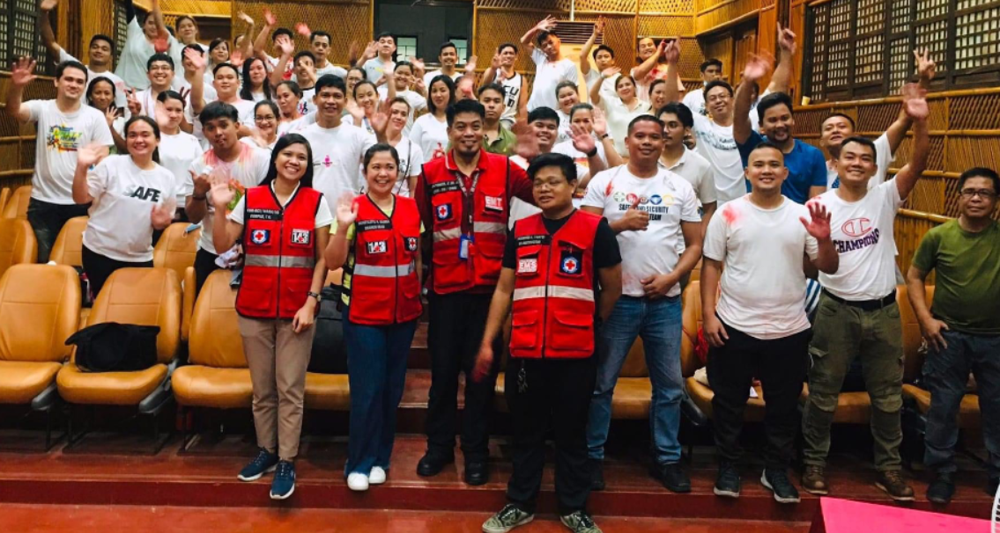
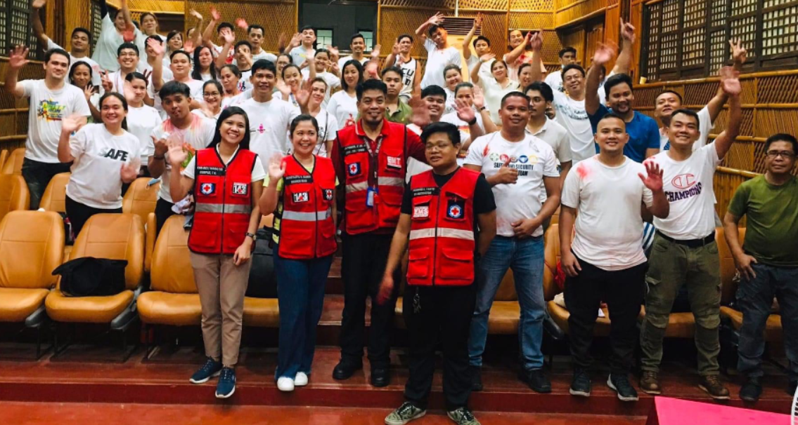
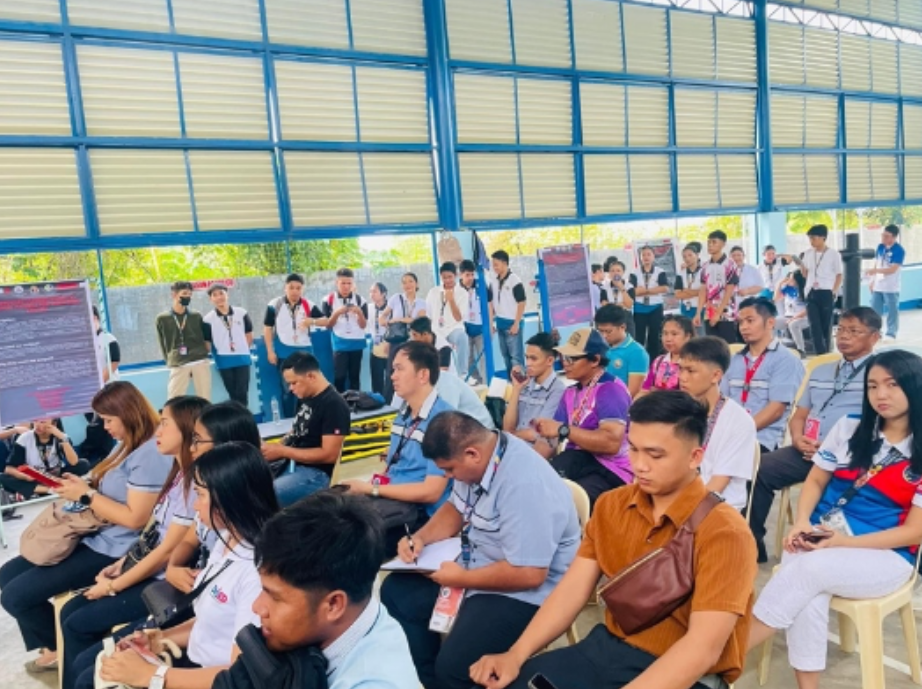
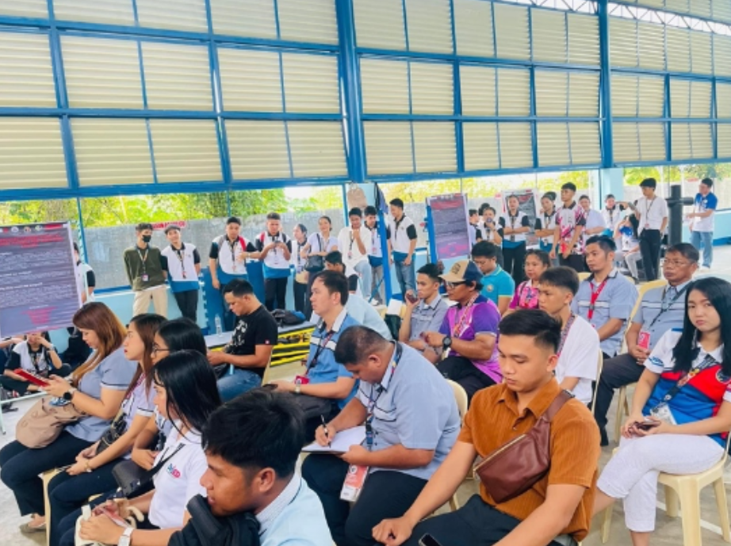

Urdaneta City, Philippines — In a meaningful initiative aimed at
enhancing physical education in local schools, the College of
Teacher Education at Urdaneta City University (UCU) has donated
research- based sports equipment to various public schools across
Pangasinan. Developed by UCU students as part of their research
projects, the equipment aims to support sports programs in
underserved communities, promoting fitness, teamwork, and skill
development among students.
A Research-Driven Initiative to Support Local Education
The donation is part of UCU's broader commitment to applying
research for community development, showcasing how student-led
projects can directly benefit society. The College of Teacher
Education collaborated with its students to design and create
sports equipment tailored to the needs of local schools, aligning
with their research findings on accessible, practical, and safe
sports gear for young athletes.
Dr. Ryan delos Reyes, Dean of the College of Teacher Education,
highlighted the significance of the initiative, stating, "This
project not only allows our students to apply their research in a
meaningful way but also addresses a genuine need in the community.
By donating this equipment, we hope to inspire the next generation
to embrace physical education and lead healthier lives."
Empowering Public Schools with Quality Sports Resources
Public schools in many regions, including Pangasinan, often face
budget constraints that limit their ability to invest in quality
sports equipment. UCU's donation helps bridge this gap, providing
schools with gear that supports various sports activities, from
basketball to track and field. Each piece of equipment was
thoughtfully crafted by UCU students, based on research focused on
durability, safety, and accessibility for young users.
One of the schools receiving the donation, [School Name] in
[Location], expressed gratitude for the much-needed resources.
"These sports items are a great addition to our physical education
program," said [Principal's Name], principal of [School Name].
"Thanks to UCU and its students, we can now offer better
facilities for our students, which will help them develop athletic
skills and foster a spirit of sportsmanship."
Students Making an Impact Through Research
The project also reflects UCU's commitment to hands-on learning,
encouraging students to engage in research that has real-world
applications. For the student-researchers involved, the experience
offered a chance to see their work directly benefit their
community, reinforcing the importance of academic efforts that
extend beyond the classroom.
One student, [Student's Name], who participated in designing the
equipment, shared, "It's fulfilling to know that our research is
making a difference. We were able to apply what we learned to
create sports equipment that can help other students in public
schools discover their potential in sports."
UCU's Dedication to Community Service and Education
UCU's College of Teacher Education plans to continue supporting
local schools through future projects that integrate research with
community service. This initiative aligns with UCU's mission to
serve as an educational institution that not only nurtures student
learning but also actively contributes to the development of the
wider community.
"By donating these resources, we are investing in the future of
young students and in the improvement of public education in
Pangasinan," Dr. delos reyes added. "Our aim is to encourage other
institutions and individuals to support local schools and create
similar projects that benefit the community."
Looking Forward: More Collaborations with Local Schools
Following the success of this donation, UCU aims to explore
additional collaborations with public schools in Pangasinan,
especially in areas that would benefit from innovative,
research-based resources. The university envisions these
partnerships as a way to promote not only physical fitness but
also the importance of applying research to meet the needs of the
community.
As UCU continues to champion research with a community focus, the
College of Teacher Education is proud to lead initiatives that
enhance educational experiences for students across Pangasinan.
This donation is a testament to UCU's commitment to transforming
research into practical, impactful contributions that uplift and
inspire local communities.

 

 
